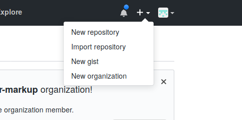
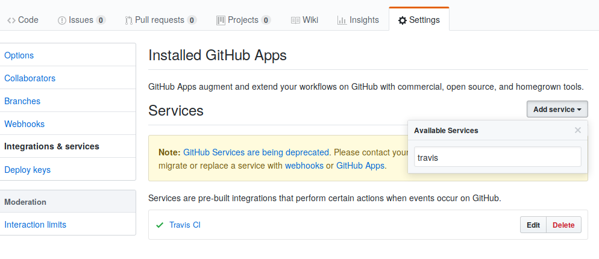

Amélioration des processus de génération de documents avec l'outil Pillar
This tutorial shows how to put into place a personal website using pillar, and automatically deploy it using github pages and travis.
Setting up the environment
This tutorial requires the development version of pillar that can be found in the feature/server-command branch.
To install this version, you will need to clone pillar, check out that branch and then proceed with a normal pillar installation, as follows:
# Clone and build pillar
$ git clone git@github.com:samakhov/pillar.git -b feature/server-command
$ cd pillar
$ ./scripts/build.sh
# install pillar in your home and update your bashrc
$ mv build ~/.pillar
$ echo 'export PATH="$PATH:~/.pillar"' >> ~/.bashrc For the following sections, we need to have a GitHub account. So check here if you do not have a GitHub account.
Setup your GitHub repository
Now we are going to create a repository on GitHub for our website.
- In the upper-right corner of any page, click +, and then click New repository as:

- Type a name for your repository. For example, "myProject".
- Optionaly, add a description of your repository like "My personal web site"
- According to informations which will be on your website, you have to chose between "Private" and "Public"
- Select Initialize this repository with a README.
- Add .gitignore by selecting Smalltalk as default language.
- Now click Create repository.
Your GitHub repository is now created.
Create your pillar website
After the installation, we can proceed to create a new site in a fresh directory.
We will install the academic archetype and then run a local server.
This should work out of the box in your local machine, however, you will need to change the baseurl setting in the pillar.conf file to correctly render in github pages.
# On a new terminal, so the new bashrc settings are taken
$ git clone https://github.com/myAccount/myProject && cd myProject
$ pillar archetype academic
$ pillar build html
$ pillar serve -w &
Then we will have a skelon site available on localhost:8080.
If you want to change the port, you can use the -p parameter as in:
$ pillar serve -p xxxx -w &
After these steps, you will get a default website as:

Editing your site
- We are going fisrt to customize your profile in
pillar.conffile.
"baseurl" : "",
"profile" : [
{
"name": "John Doe",
"avatar": "avatar.png",
"post": "Research Engineer",
"firm": "Space Laboratory"
}
],
#'Basic website meta-data. Used by the different templates to fill-out information and page metas': #comment,
"site_name": "Personal's Stuff",That is the default profile of academic archetype. So, you can set your name, choose an avatar, your post, ...
- For the naviguation bar of the site, it is managed by a
toc.pillarfile located at the root of the repository.
Let's create a new page and it as menu to the navbar.
We can choose to manage Teaching activities of a research professor.
Create teaching.pillar file at the root of your project directory with contents:
!!Teaching
!!!Teaching at Polytech'Lille
-Test and Maintenance Course - GIS 5th year since 2014-2015 and GIS 5 since 2016-2017
-Subject Programming Course (Java) - GIS 4th year apprenticeship since 2014-2015
-Advanced Database Course - GIS 4th year since 2009-2010
-Data Structures Course - GIS 3rd year 2007-2008 to 2009-2010
-Software Engineering Course - GIS 5th year from 2008-2009 to 2012-2013
-Internship Manager - GIS 4th from 2009-2010 to 2012-2013
-""In charge of end of study projects - GIS 5th"" since 2014-2015
!!!Teaching at Paris 1 University
-TD UML (Class, Activity, State, Context, Use Case and Sequence Diagrams), HTML and XML
-TD Introduction to Databases
-Occasional course Initiation to Php and MySQL
-TD Course Modeling Events in REMORA
-Occasional course Integrity constraints in the relational models
After this we have to add a new entry in toc.pillar. This will allow us to have Teaching as
a new menu in the naviguation bar.
${inputFile:path=index.pillar}$
${inputFile:path=projects.pillar}$
${inputFile:path=research.pillar}$
${inputFile:path=publications.pillar}$
${inputFile:path=coordinates.pillar}$
${inputFile:path=teaching.pillar}$
We can notice that toc.pillar is the file used to declare different menus.
Publish It on GitHub pages
If you want to host your site on GitHub, GitHub provides a free subdomain for their users.
So if you already have a GitHub account named myAccount you can have a site for your project myProject into http://myAccount.github.io/myProject.
We can already generate our pillar website automatically by calling pillar, and we can now also deploy our website in GitHub pages using travis.
Travis is a continuous integration service that will execute several scripts every time a new commit/branch/pull request is pushed into our repository.
This way, on every commit we can build our site and push our html to our website.
To use travis we need to
- Activate travis as a service on your Github repository :

- Create a
.travis.ymlfile in the root of your site with the following content
language: smalltalk
os:
- linux
smalltalk:
- Pharo-6.1
install:
# Pillar installation
- git clone https://github.com/pillar-markup/pillar.git .pillar -b dev-7 # Clone pillar
- cd .pillar && ./scripts/build.sh && cd ..
script:
- .pillar/build/pillar build html
- cd _result/html && touch .nojekyll && cd ..
deploy:
provider: pages
skip-cleanup: true
github-token: $GH_TOKEN
keep-history: true
local_dir: _result/html
on:
branch: master- Generate a token on Github and add it as an environement variable named
GH_TOKENin Travis

On your project Settings in Travis, you have a menu labelled Environment variables where you can add variables (those variables will be automatically encrypted).